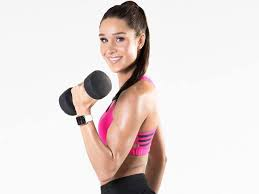

EVENTS
TRAIN INSANE
Ok Guys you've asked for it and it's BACK, Yes the remarkable Hit series is
BACKKKKKK

As we all know summer is upon us and here are some tips to help you get ready:
Ok Guys summer is fast approachinf so here are some tips to get those mean lean Arms:
1. ARM CIRLCES: This exercise strengthens the shoulders with simple, yet effective circular motion. This can be done
in minutes with absolutly no eqipment in the gym or at home
HOW IT'S DONE:
1.Stand with your feet shoulder-width apart. Extend both arms out straight to your sides to form a T with your body.
2.Slowly rotate your shoulders and arms to make forward circles about 1 foot in diameter.
3. Continue for 15 circles, then reverse directions and complete 15 rotations in the opposite direction.
2. TRICPE DIPS: Sculpt your triceps by simpling using your upper body strength, this exercise can be done one the floor
couch, chair, sturdy table or even a bench.
HOW IT'S DONE:
1. Place your hands shoulder-width apart on the furniture you’re propping yourself up on.
2. Shift your pelvis and bottom forward so there’s a 3- to 6-inch gap between your back and
the object — giving you clearance as you dip down.
3. Bend your legs in a 90-degree angle with your feet planted firmly on the ground, or exten
them out in front of you (but don’t lock your knees).
4. Slowly lower your body down and back up, focusing on engaging your triceps.
Alright ladies we did not forget yall sohere is a nice little challenge to get that SUMMER BADDIE!!!
Ok Guys you've asked for it and it's BACK, Yes the remarkable Hit series is
BACKKKKKK
Jane believes that exercise, nutrition, and mental health all work together for the success of the individual and all need to be considered for overall health.
One of the most important things as a trainer is helping someone learn proper health and fitness techniques and how to incorporate exercise into daily life.
Jane believes that making each routine functional for clients is key and will help them remain successful in the future, no matter what their goals are.

Hi I'm Charlie. Ever since I started playing sports at 5 years old, fitness has been an integral part of my life, all thanks to the motivation from family and coaches
I want to be that same motivation for others, and help form a lifelong habit. I love to help others reach their full potential, being that voice that says
“I can do one more”. I believe that building a strong foundation of proper technique, followed by consistency and progression, will allow you to achieve any fitness goal you set your mind to.
Lets get in touch and talk about your next project.